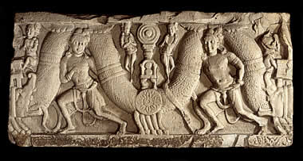

Outer copingAlong the top of the railing were limestone blocks carved with reliefs. Blocks placed like this are known as coping. These coping blocks show men carrying heavy garlands. They were used to decorate buildings for festivals and special occasions. 
In the middle of the scene is an empty throne and a dharmachakra. This is a symbol of the Buddha's First Sermon. |